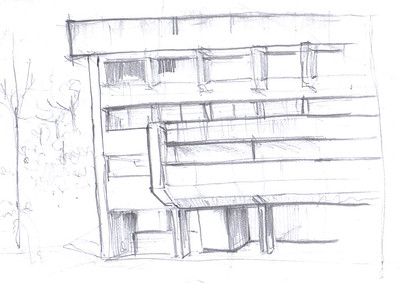
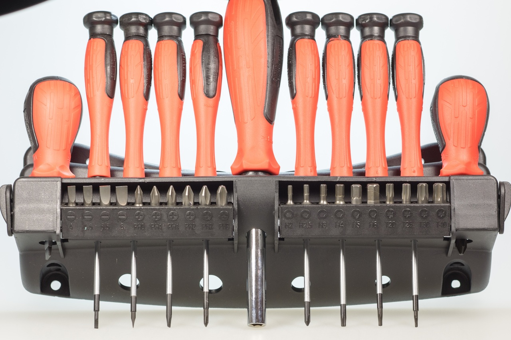
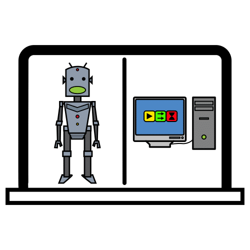
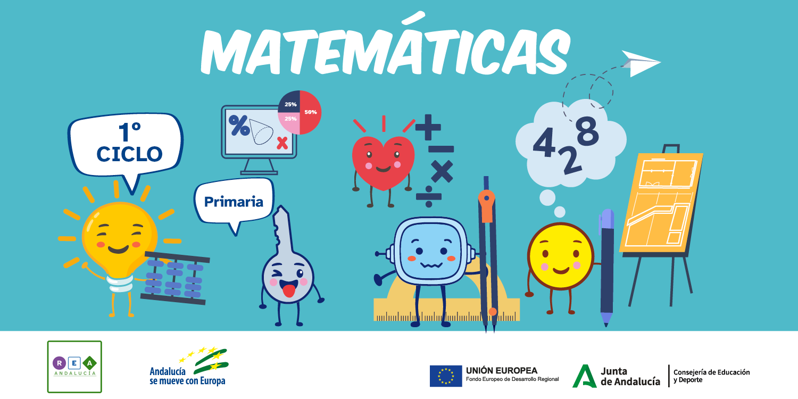

Diccionario Lectura Facilitada
Aplicación
Definición:
Programa de ordenador o de móvil.
Ejemplo:
Descargué una aplicación de música en mi nuevo móvil.
Boceto
Definición:
El boceto es un borrador de:
- Un dibujo.
- Una idea.
- Un proyecto
Ejemplo:
Hago un boceto del paisaje.
Circuito
Definición:
Lugar para celebrar carreras.
Ejemplo:
Damos una vuelta al circuito.
Estand
 Definición:
Definición:
Puesto desmontable
En el estand expones o vendes productos.
Hay estand en las ferias y mercados.
Ejemplo:
Veo un estand de libros antiguos.
Exposición
Definición:
Lugar donde enseñan un conjunto de cosas.
Ejemplo:
Voy a una exposición de cuadros.
Kit
Definición:
Conjunto de productos y utensilios suficientes para conseguir un determinado fin, que se comercializan como una unidad.
Ejemplo:
Para la excursión necesitaremos un kit de primeros auxilios.
Robótica
Definición:
Ciencia para construir robots.
Ejemplo:
La robótica es una ciencia.
